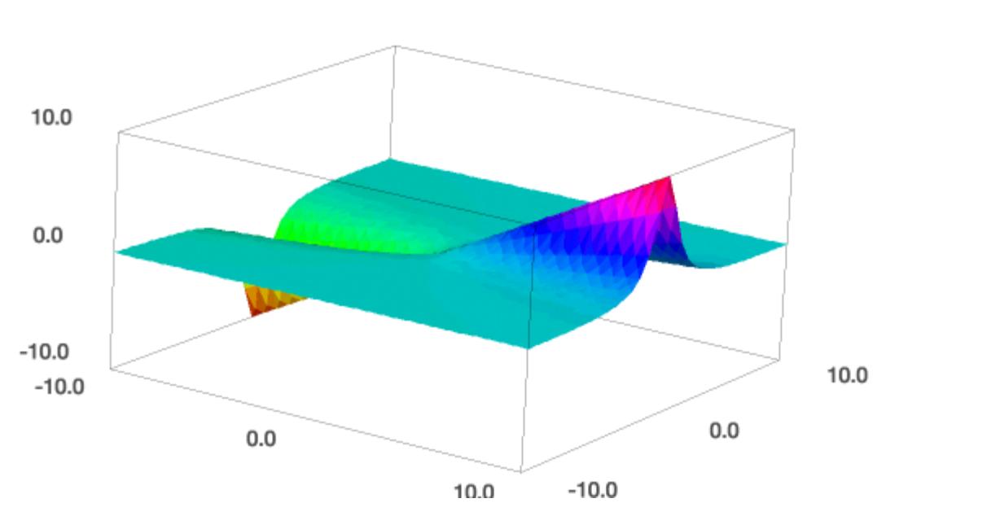
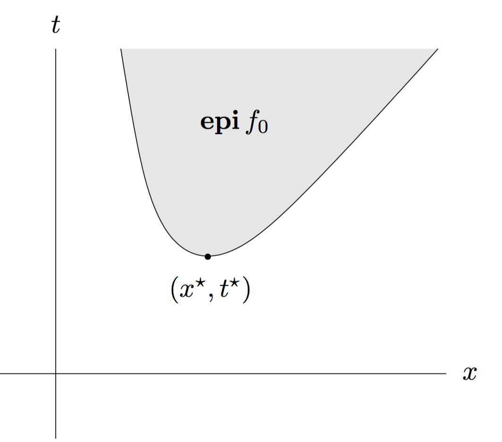
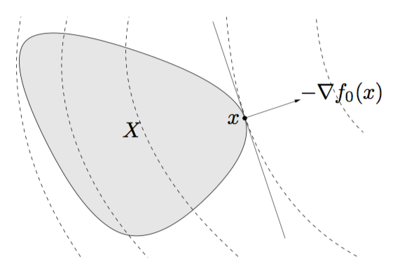
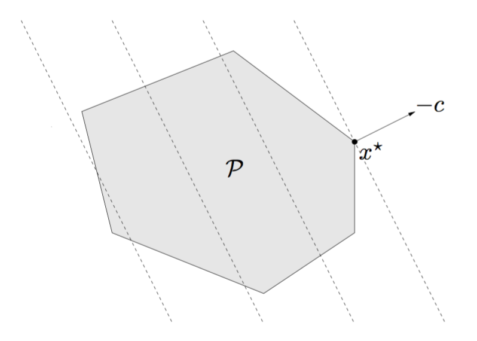
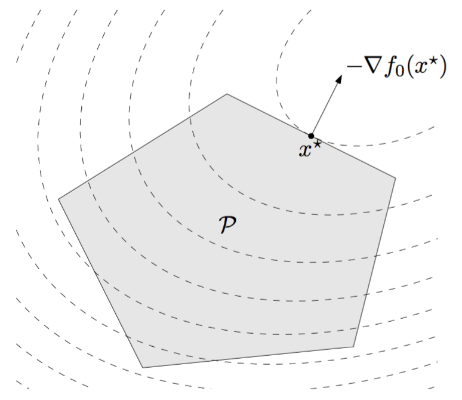
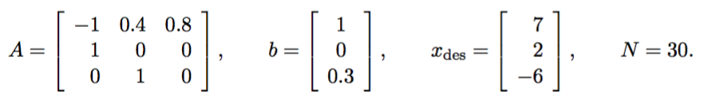

Marcelo Forets, Univ. Grenoble Alpes.
Optimization and Control Reading Group. France, Jan' 2017.
\(\def\S{\mathbf{S}}\) \(\def\A{\mathbf{A}}\) \(\def\b{\mathbf{b}}\) \(\def\B{\mathbf{B}}\) \(\def\K{\mathbf{K}}\) \(\def\G{\mathbf{G}}\) \(\def\S{\mathbf{S}}\) \(\def\V{\mathbf{V}}\) \(\def\X{\mathbf{X}}\) \(\def\Y{\mathbf{Y}}\) \(\def\x{\mathbf{x}}\) \(\def\y{\mathbf{y}}\) \(\def\p{\mathbf{p}}\) \(\def\z{\mathbf{z}}\) \(\def\M{\mathbf{M}}\) \(\def\Q{\mathbf{Q}}\) \(\newcommand{\R}{\mathbb{R}}\) \(\newcommand{\C}{\mathbb{C}}\) \(\newcommand{\N}{\mathbb{N}}\) \(\newcommand{\red}[1]{\textbf{{\color{red}#1}}}\)
Would you call this a convex optimization problem?
\[ \begin{equation} \begin{aligned} \text{minimize}\quad & f_0(x) = x_1^2 + x_2^2\\ \text{subject to} \quad &f_1(x) = x_1/(1+x_2^2) \leq 0,\\ \quad &h(x) = (x_1+x_2)^2 = 0. \end{aligned} \end{equation} \]
Hint.
Let's plot \(f_1(x_1, x_2)\):
var('x1 x2')
f = x1/(1+x2^2)
# show 3d plot in [-10, 10]^2
plot3d(f, (x1, -10, 10), (x2, -10, 10), adaptive=True)
Discussion.
Recall that: \(f\) is convex iff it is convex along lines, that is, for all vectors \(x\) and \(v\), the function \(g(t)=f(x+vt)\) is convex, where \(t \in \{\xi : x+v\xi \in \textrm{dom }f\}.\) This suggests to define a line and prove that the function is not convex along this line. The picture tells that a good candidate is at the point \(x = (1,0)^T\), and for the direction we choose \(v = (0, 1)^T\). Then, \[ g(t) = f(x+vt) = 1/(1+t^2). \] This function is bell-shaped, and is not convex.
However, the problem can be reformulated as:
\[ \begin{equation} \begin{aligned} \text{minimize}\quad & f_0(x) = x_1^2 + x_2^2\\ \text{subject to} \quad &\bar{f_1}(x) = x_1 \leq 0,\\ \quad &\bar{h}(x) = x_1+x_2 = 0. \end{aligned} \end{equation} \]
Clearly, we are optimizing a convex function over a convex set.
In Boyd's book, former system is said to be (just) a standard optimization problem, while the latter is said to be a convex optimization problem in standard form. Thus, in the terminology of the book, in a convex optimization problem is required that the feasible set is described by a set of inequalities involving convex functions, and a set of affine equality constraint functions.
\[ \begin{equation} \begin{aligned} \text{minimize}\quad & f_0(x) \\ \text{subject to} \quad &f_i(x) \leq 0, ~~ i = 1,\ldots,m\\ \quad &h_i(x) = 0, ~~ i = 1,\ldots,p \,. \end{aligned} \end{equation} \]
Terminology.
Toy examples.
Here \(\text{dom } f = \mathbb{R}_{>0}\) and the problems are unconstrained:
\[ \begin{equation} \begin{aligned} \text{minimize}\quad & f_0(x) \\ \text{subject to} \quad &f_i(x) \leq 0, ~~ i = 1,\ldots,m\\ \quad &h_i(x) = 0, ~~ i = 1,\ldots,p \,. \end{aligned} \end{equation} \]
\[ \begin{equation} \begin{aligned} \text{minimize}\quad & f_0(x) \\ \text{subject to} \quad &f_i(x) \leq 0, ~~ i = 1,\ldots,m\\ \quad &h_i(x) = 0, ~~ i = 1,\ldots,p \,. \end{aligned} \end{equation} \]
Examples.
\[ \begin{equation} \begin{aligned} \text{minimize}\quad & t \\ \text{subject to} \quad &f_0(x) - t \leq 0, \\ \quad &f_i(x) \leq 0, ~~ i=1,\ldots,m\\ \quad &h_i(x) = 0, ~~ i = 1,\ldots,p \,. \end{aligned} \end{equation} \]

Example (polynomial optimization).
Consider a univariate polynomial \(p : \R \to \R\), \(p \in \R_{2k}[t]\), and let \(x = \text{vec } p \in \R^{2k+1}\). The polynomial optimization problem:
\[ \begin{equation} \begin{aligned} \text{maximize}\quad & \inf_t p(t) \\ \text{subject to} \quad &l_i \leq p(t_i) \leq u_i, ~~ i = 1,\ldots,m \,. \end{aligned} \end{equation} \] can be reformulated via epigraph form as: \[ \begin{equation} \begin{aligned} \text{maximize}\quad & \gamma \\ \text{subject to} \quad &p(t) - \gamma \geq 0, ~~ t \in \R \\ \quad &l_i \leq p(t_i) \leq u_i, ~~ i = 1,\ldots,m \,. \end{aligned} \end{equation} \]
The interest in this reformulation is that we recover a nonnegative polynomial constraint \(p(t) - \gamma \geq 0.\) The characterization of nonnegative polynomials via linear-matrix inequalities can be applied in this setup (see Exercise 3).
\[ \begin{equation} \begin{aligned} \text{minimize}\quad & f_0(x) \\ \text{subject to} \quad &f_i(x) \leq 0, ~~ i = 1,\ldots,m\\ \quad &a^T_i x = b_i, ~~ i = 1,\ldots,p \,. \end{aligned} \end{equation} \] where \(f_0,\ldots,f_m\) are convex functions.
Two key remarks:
Proof of 1.
Recall that intersection is an operation that preserves convexity. The feasible set is the intersection of:
Hence, the feasible set is convex.
Proof of 2.
Suppose that \(x \in \mathcal{D}\) is locally optimal, that is, \(x\) is feasible and \[ f_0(x) = \inf \{ f_0(z) : z \text{ is feasible and } \Vert z-x \Vert_2 \leq R\} \] for some \(R > 0\). Suppose that \(x\) is not globally optimal: assume there is a feasible \(y\), such that \(f_0(y) < f_0(x)\); by hypothesis we have \(\Vert y-x \Vert_2 > R\). By convexity of the feasible set, for any \(\theta \in [0, 1]\), \[ z = (1-\theta)x + \theta y \] is feasible. Pick \(\theta = \frac{R}{2\Vert y-x \Vert_2} < 1\), then we have \[ \Vert z-x \Vert_2 = \theta \Vert y-x \Vert_2=\frac{R}{2} < R, \] hence \(f_0(z)\geq f(x)\) by hypothesis.
On the other side, by convexity of \(f_0\), we have \[ f_0(z) \leq (1-\theta) f_0(x) + \theta f_0(y) < f_0(x), \] a contradiction.
\[ \begin{equation} \begin{aligned} \text{minimize}\quad & f_0(x) \\ \text{subject to} \quad &f_i(x) \leq 0, ~~ i = 1,\ldots,m\\ \quad &a^T_i x = b_i, ~~ i = 1,\ldots,p \,. \end{aligned} \end{equation} \]
Proposition. If \(f_0\) is differentiable, then, \(x\) is optimal iff \(x\) is feasible and \(\nabla f_0(x)^T(y-x)\geq 0\) for all feasible \(y.\)

Corollary. If the problem is unconstrained, then the optimality condition simplifies to \(\nabla f_0(x) = 0\).
Proof of the optimality condition.
Recall the 1st order condition: suppose \(f\) is differentiable (that is, \(\nabla f(x)\) exists for all \(x\) in its domain). Then \(f_0\) is convex iff \(\text{dom } f\) is convex and for all \(x, y \in \text{dom } f\), it holds \[ f(y) \geq f(x) + \nabla f(x)^T(y-x). \]
Let \(X\) denote the feasible set.
(\(\impliedby\)) Suppose that \(x \in X\) and that \(\nabla f_0(x)^T (y-x) \geq 0\) for all \(y\in X\). From the first order condition, we get \(f(y)-f(x) \geq 0\) for all \(y\in X\), hence \(x\) is an optimal point.
(\(\implies\)) We proceed by contradiction: assume \(x \in X\) is optimal, and there exists \(y \in X\) such that \(\nabla f_0(x)^T (y-x) < 0\). For each \(t \in [0, 1]\), the point \(z(t) = ty + (1-t)x\) is feasible, by convexity of \(X\). Then, \[ \left. \frac{d}{dt}f_0(z(t)) \right\rvert_{t=0} = \nabla f_0(x)(y-x) < 0 \] by hypothesis, but this implies that for small positive \(t\), \(f_0(z(t))<f_0(x)\), a contradiction.
Proof of the corollary.
If \(x \in \text{dom } f\) is optimal, then for all feasible \(y \in \text{dom } f\), it holds \[ f(y) \geq f(x) + \nabla f(x)^T(y-x). \] We can take \(y = x-t\nabla f_0(x)\) with small positive \(t\), which is in the domain of \(f\) because \(\text{dom f}\) is open, and is feasible for sufficiently small \(t\). Hence, \[ \nabla f(x)^T(y-x) = -t \Vert \nabla f_0(x)\Vert_2^2 \geq 0, \] hence \(\nabla f_0(x)\) must vanish.
\[ \begin{equation} \begin{aligned} \text{minimize}\quad & f_0(x) \\ \text{subject to} \quad &Ax = b, ~~ A \in\R^{p\times n}, b \in \R^p \,. \end{aligned} \end{equation} \] Assume \(f_0\) is differentiable, and \(x\) is optimal.
for feasible \(x, y\), we must have \(y-x = z \in \ker A\).
from \(\nabla f_0(x)^T(y-x)\geq 0\), we have that \(\nabla f_0(x)\perp \ker A\).
recall that \((\ker A)^\perp = \text{ran } A^T\) and let \(\dim (\ker A) = k\).
we deduce that there exists \(\nu \in \R^k\) such that \[ \nabla f_0(x) + A^T v = 0 \] for all feasible \(x\).
\[ \begin{equation} \begin{aligned} \text{minimize}\quad & c^T x + d \\ \text{subject to} \quad &Gx \preceq h \\ \quad &Ax = b\,. \end{aligned} \end{equation} \] where \(G \in \R^{m\times n}\), and \(A \in \R^{p\times n}\).
the objective and all constraint functions are affine.
geometrically: minimize an affine function over a polyhedron \(\mathcal{P}\).

Two equivalent formulations:
Standard form LP: \[ \begin{equation} \begin{aligned} \text{minimize}\quad & c^T x \\ \text{subject to} \quad &Ax = b\\ \quad &x \succeq 0 \\ \end{aligned} \end{equation} \]
Inequality form LP: \[ \begin{equation} \begin{aligned} \text{minimize}\quad & c^T x \\ \text{subject to} \quad &Ax \preceq b. \end{aligned} \end{equation} \]
\[ \begin{equation} \begin{aligned} \text{minimize}\quad & \frac{1}{2} x^T P x + q^Tx + r\\ \text{subject to} \quad &Gx \preceq h \\ \quad &Ax = b\,. \end{aligned} \end{equation} \] where \(P \in S^n_+\), \(G \in \R^{m\times n}\), and \(A \in \R^{p\times n}\).
the objective is (convex) quadratic, and all constraints are affine.
geometrically: minimize a convex quadratic function over a polyhedron \(\mathcal{P}\).

Two related problems:
\[ \begin{equation} \begin{aligned} \text{minimize}\quad & \frac{1}{2} x^T P_0 x + q_0^Tx + r_0\\ \text{subject to} \quad &\frac{1}{2} x^T P_i x + q_i^Tx + r_i\leq 0,~i=1,\ldots,m\\ \quad &Ax = b\,. \end{aligned} \end{equation} \] where \(P_i \in S^n_+\), \(G \in \R^{m\times n}\), and \(A \in \R^{p\times n}\). When \(P_i\) are positive definite, the feasible region is the intersection of ellipsoids.
\[ \begin{equation} \begin{aligned} \text{minimize}\quad & f^T x\\ \text{subject to} \quad &\Vert A_i x + b_i\Vert_2 \leq c_i^T x + d_i,~i=1,\ldots,m\\ \quad &Ax = b\,. \end{aligned} \end{equation} \] where \(A_i \in R^{n_i \times n}\), \(F \in \R^{p\times n}\), and \(x \in \R^n\).
\[ \begin{equation} \begin{aligned} \text{minimize}\quad & f_0(x)\\ \text{subject to} \quad &f_i(x)\leq 1,\qquad i=1,\ldots,m \\ \quad &h_i(x) = 1,\qquad i=1,\ldots,p \,. \end{aligned} \end{equation} \] where \(f_i\) are posynomials and \(h_i\) are monomials. The domain is \(\mathcal{D}=\R^n_{>0}\).
Terminology.
A monomial is a function \(f : \R^n \to \R\), \(\text{dom } f = \R^n_{>0}\), defined as \[ f(x) = cx_1^{a_1}\cdots x_n^{a_n}, \] \(c>0\), \(a_i \in \R\). (note that it differs from the usual notion of monomial).
A posynomial function with \(K\) terms is a sum of monomials, namely \[ f(x) = \sum_{k=1}^K c_k x_1^{a_{1k}}\cdots x_n^{a_{nk}}, \qquad c_k > 0. \]
Posynomials are closed under addition, multiplication, and nonnegative scaling.
Geometric programs are not convex in their natural form, but can be transformed into convex optimization problems by suitable change of variables and a transformation of the objective and constraint functions.
\[ \begin{equation} \begin{aligned} \text{minimize}\quad & f_0(x)\\ \text{subject to} \quad &f_i(x) \preceq_{K_i} 0,\qquad i=1,\ldots,m \\ \quad &Ax = b\,. \end{aligned} \end{equation} \] where \(f_0 : \R^n \to \R\), \(K_i \subseteq \R^{k_i}\) are proper cones, and \(f_i : \R^n\to \R^{k_i}\) are \(K_i\)-convex.
Our general standard convex optimization problem is a special case with \(K_i = \R_+\).
The feasible set, any sublevel set, and optimal set are convex.
Any locally optimal point is globally optimal.
The first order optimality condition holds.
Two important instances: CP and SDP
\[ \begin{equation} \begin{aligned} \text{minimize}\quad & c^T x\\ \text{subject to} \quad &Fx + g \preceq_{K} 0 \\ \quad &Ax = b\,. \end{aligned} \end{equation} \] They generalize LP in the sense that componentwise inequality is replaced with a generalized linear inequality.
\[ \begin{equation} \begin{aligned} \text{minimize}\quad & c^T x\\ \text{subject to} \quad &x_1 F_1 + \cdots + x_n F_n + G \preceq 0 \\ \quad &Ax = b\,. \end{aligned} \end{equation} \] where \(K = S_+^k\), \(G, F_i \in S^k\), and \(A \in \R^{p\times n}\). The inequality here is a linear matrix inequality (LMI).
\[ \begin{equation} \begin{aligned} \text{minimize}\quad & f_0(x) \\ \text{subject to} \quad &f_i(x) \leq 0, ~~ i = 1,\ldots,m\\ \quad &h_i(x) = 0, ~~ i = 1,\ldots,p \,. \end{aligned} \end{equation} \] where the minimization is taken with respect to a proper cone \(K\subseteq \R^q\), \(x \in \R^n\) is the optimization variable, \(f_0 : \R^n \to \R^q\) is a vector objective function, \(f_i : \R^n \to \R\) are the inequality constraint functions, and \(h_i:\R^n \to \R\) are equality constraint functions.
If you choose Julia...
Complement to exercise 1.
Implement with this data:

Plot the actuator signal \(u(t)\) as a function of \(t\). Source: Additional exercises in convex optimization.
Complement to exercise 2.
Alternatively, you may implement the Robust LP with interval coefficients. Exercise 4.13.
Complement to exercise 3.
The problem can be reformulated as
\[ \begin{equation} \begin{aligned} \text{maximize}\quad & \gamma \\ \text{subject to} \quad &p(t) - \gamma \geq 0, ~~ t \in \R \\ \quad &l_i \leq p(t_i) \leq u_i, ~~ i = 1,\ldots,m \,. \end{aligned} \end{equation} \]
An SDP can be obtained by using the LMI characterization of nonnegative polynomials from Chapter 2. It results in:
\[ \begin{equation} \begin{aligned} \text{maximize}\quad & \gamma \\ \text{subject to} \quad &x_1 - \gamma = Y_{11}, \\ \quad &x_i = \sum_{m+n=i+1} Y_{mn} \leq u_i, ~~ i = 2,\ldots, 2k+1 \\ \quad &l_i \leq \sum_i p(t_i) \leq u_i, ~~ i = 1,\ldots,m \\ \quad &Y \succeq 0 \,. \end{aligned} \end{equation} \] in the optimization variables \(x \in \R^{2k+1}\), \(\gamma \in \R\), \(Y\in \S^{k+1}\).
Make plots of \(p(t)\) to verify your solution.